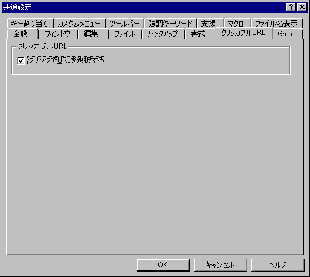

共通設定 『クリッカブルURL』プロパティ
『全般』 『ウィンドウ』 『編集』 『ファイル』 『バックアップ』 『書式』 『クリッカブルURL』 『Grep』 『キー割り当て』 『カスタムメニュー』 『ツールバー』 『強調キーワード』 『支援』 『マクロ』 『ファイル名表示』

<クリッカブルURL>
■クリックでURLを選択する
このオプションが有効のとき、URLをクリックするとURL全体を選択状態にします。
タイプ別設定 『カラー』プロパティのURLで、色分け設定ができます。
色分けをOFFにすると、ダブルクリックによるクリッカブルURLが無効になります。